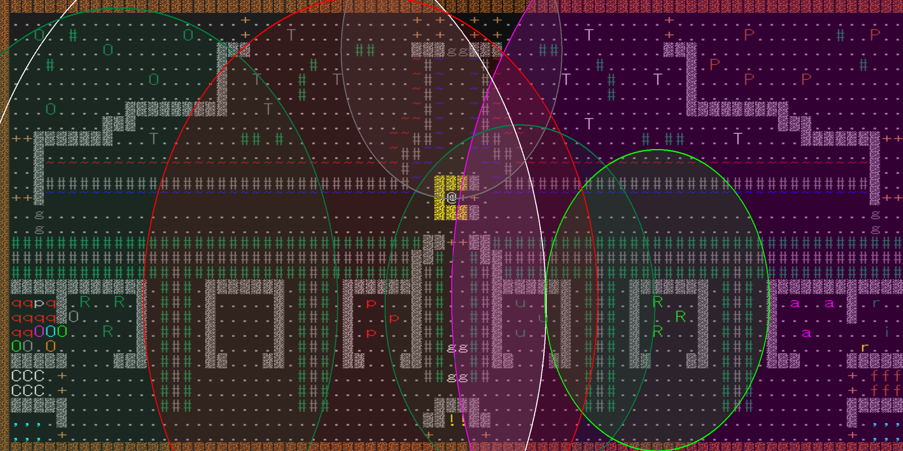

2023/12/20更新
モンスター闘技場で億万長者になろう(変愚蛮怒編)
Roguelike Advent Calendar 2023の21日目の記事です。
変愚蛮怒のモンスター闘技場で荒稼ぎしよう！という内容です。コードをしっかり読める人間ではないので、もし間違っている箇所があってもご容赦ください…。m(_ _)m
前回の記事はdeskullさんの
馬鹿馬鹿蛮怒0.0.0.49-Alphaリリースになります。
モンスター闘技場のシステム
本題の稼ぎ方に入る前にモンスター闘技場のシステムを軽く確認します。
まず、出場モンスターについてですが、モンスター闘技場に出場するモンスターは潜ったことのある一番深い階+5(nasty生成あり？)で決まるため、
例えば12Fランクエをクリアした直後なら17Fまでのモンスターが、龍窟入口に入ると65Fまでのモンスターが出ます。
モンスターは階層が近いものが集められるため、ワイアームvsわめくキチガイvs…というマッチにはなりません。
オッズは様々な要素が考慮されますが、だいたいレベルに比例します。特筆すべきはACや攻撃手段が考慮されないことで、ACの高いモンスターは強さのわりにオッズが低くなったり、食いしん坊ゴーストのような攻撃能力が無いモンスターもそこそこのオッズがついたりします。
賭け方
残念ながら、毎試合頭の中でシミュレートする必要があります。しかもオッズは基本的に低めに設定されているため、勝率50%程度では赤字になってしまいます…。儲けが出ても正直普通に炭鉱夫した方が稼げます。
実用に向けてセットアップ
ではどうするかというと、十中八九勝てる試合にだけ賭け、更に効率を高めて通常探索よりも稼げるようにします。
そのためにまずマクロを組みます。メッセージウィンドウを最小化すると高速で回せます。
▼賭けるモンスター選択後$4800賭けて次の試合へ (メッセージスキップONの場合)
A:4800\rm
P:\[KP_Multiply]
▼賭けるモンスターがいなかったとき次の試合へ
A:11\rm
P:\[KP_Subtract]
このマクロを使用することで、勝敗が分からない組み合わせはスキップでき、爆速で試合消化できます。
次に、更に出場モンスターを絞るために、一番深い階層を1Fにします。イーク洞・鉄獄以外に入るとできなくなりますが、そうでないならフロアリセットなどで1Fに出来ます。
更に判断時間を短縮するため、賭けるモンスターを絞ります。具体的に言うと、
見習戦士・大灰色ヘビ・大黄色ヘビ
以外には賭けません。こうすることで、これらのモンスターがいるかの判断だけでよくなり、毎秒1試合消化できます。
それでも低くない確率で負けるので、賭けるのはそれ以外がイモムシなどとても弱いモンスターのみ(見習いメイジやプリーストなどは一体まで許容)のときにしましょう。
1Fのおすすめモンスター紹介
見習戦士・大灰色ヘビはACと攻撃力が非常に高く、ベトベトなどの戦闘力が低いモンスターとマッチしやすいため、格別の勝率と安定性を誇ります。
=== Num:43 Lev:2 Rar:1 Spd:+0 Hp:9d4 Ac:16 Exp:8
彼はまだまだ経験は浅いようだが、手強い相手だ。
彼は通常地下 2 階で出現し、普通の速さで動いている。
この人間を倒すことは 1 レベルのキャラクタにとって 約5.33 ポイントの経験となる。
彼はダンジョンを照らし、ドアを開け、ドアを打ち破ることができる。
彼は経験を積むと、ソードマンに進化する。
彼は侵入者を注意深く見ており、 200 フィート先から侵入者に気付くことがある。
彼は一つのアイテムや財宝を持っていることがある。
彼は 1d8 のダメージで斬って攻撃し、 1d8 のダメージで斬って攻撃し、 1d7 のダメージで斬って攻撃する。
=== Num:90 Lev:4 Rar:1 Spd:-10 Hp:6d8 Ac:41 Exp:14
それは長さが 3 メートル近くもある。
それは通常地下 4 階で出現し、少々不規則に、かつゆっくりと動いている。
この自然界のモンスターを倒すことは 1 レベルのキャラクタにとって 約18.67 ポイントの経験となる。
それはドアを打ち破り、水を渡ることができる。
それは経験を積むと、マムシに進化する。
それは侵入者を見過ごしがちであるが、 60 フィート先から侵入者に気付くことがある。
それは 1d8 のダメージで噛んで攻撃し、 1d10 のダメージで体当たりして攻撃する。
大黄色ヘビは安定性にこそ欠けますが、蛇一族らしく高いACと体力を温存できるふらふら移動を持つため強力な上、オッズが高くなりやすい大穴型です。
=== Num:59 Lev:2 Rar:1 Spd:-10 Hp:4d8 Ac:38 Exp:11
それは長さが 3 メートル近くもある。
それは通常地下 2 階で出現し、少々不規則に、かつゆっくりと動いている。
この自然界のモンスターを倒すことは 1 レベルのキャラクタにとって 約7.33 ポイントの経験となる。
それはドアを打ち破り、水を渡ることができる。
それは経験を積むと、大灰色ヘビに進化する。
それは侵入者を見過ごしがちであるが、 50 フィート先から侵入者に気付くことがある。
それは 1d7 のダメージで噛んで攻撃し、 2d5 のダメージで体当たりして攻撃する。
他にも強いモンスターはいますが、あまり安定しません。
1F闘技場の危険モンスター紹介
| モンスター |
強さの絶対評価 |
強さの相対評価 |
備考 |
| 馬 |
S |
A |
最強モンスターだが、相手も強いのでたまに負ける。 |
| 見習い盗賊・レンジャーなど |
A |
B |
バランスの取れたモンスターで、平均少し上くらいの強さ |
| 見習いメイジ・プリースト・超能力者 |
C |
C |
超能力者だけは強め。それ以外は1体だけいるなら賭けていい。 |
| コボルド・カラス・ニーベルング |
B |
B |
強くはないが、まれに勝負をひっくり返してくる面倒なやつ |
1F闘技場のうま味モンスター紹介
| モンスター |
強さの絶対評価 |
強さの相対評価 |
備考 |
| ベトベト |
D |
E |
1d8程度の一回殴り。弱いがごくまれに優勝する。 |
| イモムシ |
D |
E |
spd-10で1d7程度の一回殴り。弱い。 |
| ゴースト |
F |
F |
攻撃手段を持たない。奴は四天王の中でも最弱… |
| ムカデ |
D |
E |
倍速だが1d4程度の殴りしか持たない。 |
闘技場スカムを取り入れたチャート
闘技場スカムは観光客など戦いたくないビルドで輝きます。
観光客チャートの場合、証人クエをクリア/失敗したら、炭鉱夫になるか、マゴットなどを倒し2000$ほど稼ぎます。このときイーク洞2Fへの階段は降りないようにしましょう。
金がたまったら噂を聞いてモリバントあたりに町移動し、博打を始めます。確実に勝てる組み合わせにだけ賭けるのですが、それでも開幕集中放火で負けてしまったりもするので、いくらかは温存しましょう。最低限500$は残るようにすれば、最悪また炭鉱夫で稼げます。
金がたまったら、金にものを言わせてBMスカムして防具やアイテムをそろえ、下水道でlv23辺りまで上げて賭け額上限を増やします。この頃になれば5000/分くらいは稼げます。
後はスカムを自重しないなら、アイスボルトのロッドを集めイカ焼きするもよし、援軍の巻物やペットの巻物でパワーDを連鎖召喚するもよし、魔道具連打で鉄獄を潜るもよしです。
ちなみにアンドロ観光ならlv35から(MPが足りれば)年経た風Eを召喚できるため、パワーD作成が容易になります。みんなもこのチャートでPYECをゲットしよう！
参考dump(プレイ中で放置してるもの)
なんJ民_lv49.txt
AFコンプるれろLv36.txt
ゴリラ廻戦_イカ焼き.txt
終わりに
効率化すれば、どんな貧弱ビルドでもリスクを背負うこと無しに金を稼ぐことができ、終盤でも金だけなら最高クラスの稼ぎになります。ただ、楽しいかというと…微妙かもしれません(自分は博打大好きです)。
どうしようもない貧弱ビルドをする際にはぜひチャートに取り入れて見てください！
次回の記事は
神社の賭け試合で億万長者になろう(幻想蛮怒編)になります。